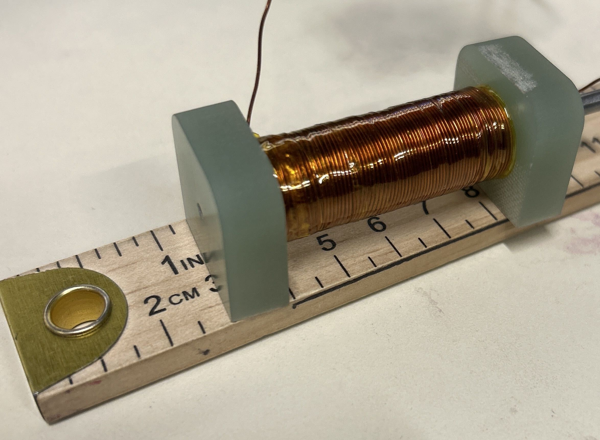
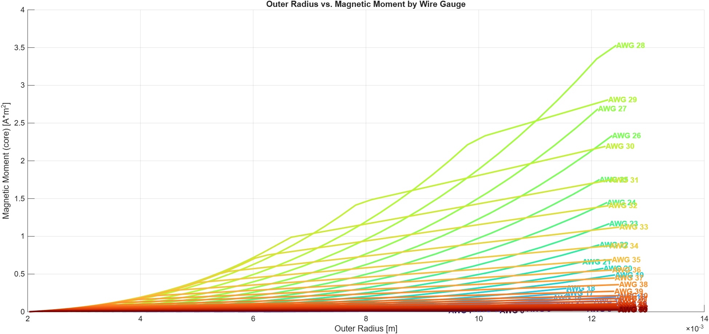
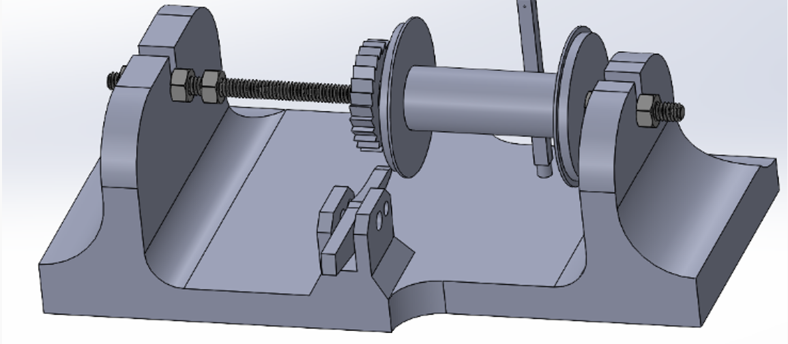

As responsible engineer (RE) for the SCALAR mission, I managed a team of 5 mechanical and electrical engineers through the development of an ADCS system of two magnetorquer rods and one magnetorquer embedded into a PCB. I took direct ownership over the design, manufacture, and testing of the magnetorquer rods, sticking with them from inception to integration. A magnetorquer rod is a coil of wire wrapped around a rod or core which generates a magnetic field when current is supplied. In space, these function as actuators for an ADCS system because a torque is generated when they are in the presence of Earth's magnetic field.

Design Phase
The first step in making a design was determination of constraints. A lot of these were provided from the fact that SCALAR is a 1U CubeSat, with limits on volume, mass, and power.
- core radius: 2 mm
- core length: 41.91 mm
- maximum radius: 12.5 mm
- maximum mass: 250 g
- maximum current: 0.1 A
- voltage supply: 3.3 V
For an air core magnetorquer, the generated magnetic dipole moment is \[ M_{air} = N I A \] I then used an equation from Mehrjardi et. al. in order to calculate the gain provided by the core of the magnetorquer. 98% pure iron was selected as the core material after a trade study performed by one of our members, Luke Gardiner. \[ M_{core} = 1 + \frac{\mu_r - 1}{1 + (\mu_r - 1)N_d} \] So the total magnetic dipole moment generated by the torque rod is the combined equation, \[ M = (N I A)(1 + \frac{\mu_r - 1}{1 + (\mu_r - 1)N_d}) \] I then took this combined equation and wrote a MATLAB script that outputs all possible magnetorquer designs that satisfy the constraints, adding a new layer of wire until they are broken, then beginning again with a new wire gauge.

This screenshot shows the output of the tool as a plot, which shows the resulting magnetic moment as a function of wire radius for each wire gauge. There is a notable drop off in each design, where the exponential rise in magnetic moment transitions into a linear regime. This is hypothesized to be due to the fact that the resistance added in the additional wrapping of wire causes the amount of available current to drop. See below example for wire gauge 29.
| Layer | M (A*m^2) | R [ohms] | I [A] |
|---|---|---|---|
| 24 | 2.0058 | 30.1416 | 0.1 |
| 25 | 2.2123 | 32.2502 | 0.1 |
| 26 | 2.3314 | 34.427 | 0.09586 |
| 27 | 2.3993 | 36.6721 | 0.08999 |
| 28 | 2.4672 | 38.9853 | 0.08465 |
Manufacture Phase
Designs are now generated, and manufacturing can begin to be considered. Even though 28 AWG produces an extremely high magnetic moment, is it possible given the resources available to me to wrap wire perfectly 28 times? I say perfectly because any deviation in the quality of a layer not only reduces the overall uniformity of the generated magnetic field (bad), but it also makes the next layer absolutely impossible to wrap properly. A lathe was identified as a great choice for wrapping, (because I was in machine shop that semester and had become familiar with lathes), and because the core could be locked in place and spun while wire was wrapped around it. Lathes are very large however, and magnetorquers (in our case) are very small. Lucky enough, Home Depot sells a mini-lathe for only $40! Endcaps were then engineered by John Babineau in his families machine shop to function as the interface between the satellite and the magnetorquers, and to provide a physical barrier to cause wire wrapping to reverse directions. But how to actually wrap the wire??
The Tensioner (patent pending)
A key factor in wrapping quality is tension. With applied tension, wire can be accurately wrapped into place and secured. We have a mini-lathe, now how to apply tension to the wire? I actually stole a concept from fishing enthusiasts who have devised ways to re-spool fishing line, where similarly a high amount of tension is required. These designs use a spring to apply friction to the spool, and physically tighten down the fishing line using a nut. While we can't crush space-grade copper wire using a nut, we can definitly use a spring to apply friction to a spool! From this, the first tensioner was born.


Included in this design was a little gear-and-pawl system that I'd hoped would bring easier control to the user. The spring worked great to apply friction... until using an unthreaded rod caused everything to loosen and come apart during our first wrapping. But, even still, this was progress! Many revisions were made to get to a final tensioner design, getting up to 7 different full-scale assembies before the final version was produced. Notably, we gained enough interest during this development that we actually exchanged a tensioner to St. Louis University for access to their thermal vacuum chamber!

The final version features a threaded rod, a new gear-and-pawl that is much more accessible, and a refined shape that is more ergonomic, strong, and specifically designed to be utilized in tangent with the mini-lathe. We are now working on applying for a patent for the design!
Flight Hardware
The final flight magnetorquer rods utilize 13 wraps of wire, with a wire guage of 26. Above 13 wraps and the interstitial errors become unmanageable, even with improvements to the tensioner design. Above a 26 wire gauge, there is too much tensioner being applied, and the wire can snap during wrapping. The final magnetorquers (imaged above) will be flying to space in Spring 2027!
Post-Launch
TBR SPRING 2027
Future Work
I was inspired by a lot of what I saw at this year's SmallSat Conference in terms of magnetorquer designs and manufacture. While the tensioner marks a first step into the WashU Satellite magnetorquer journey, it will not be the last! I hope to integrate the mini-lathe and the tensioner into one system that is much more automated, precise, and can be sold (for a most resonable profit, I mean we gotta keep the lights on here, tensioners cost money) to other design teams around the world. Stay tuned!